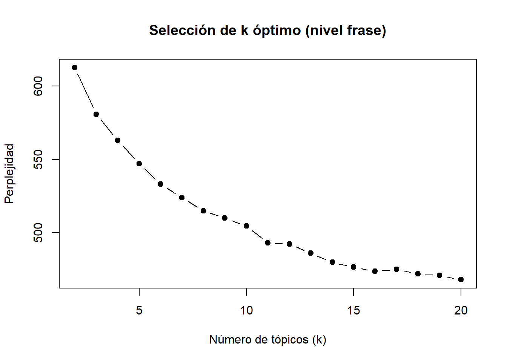
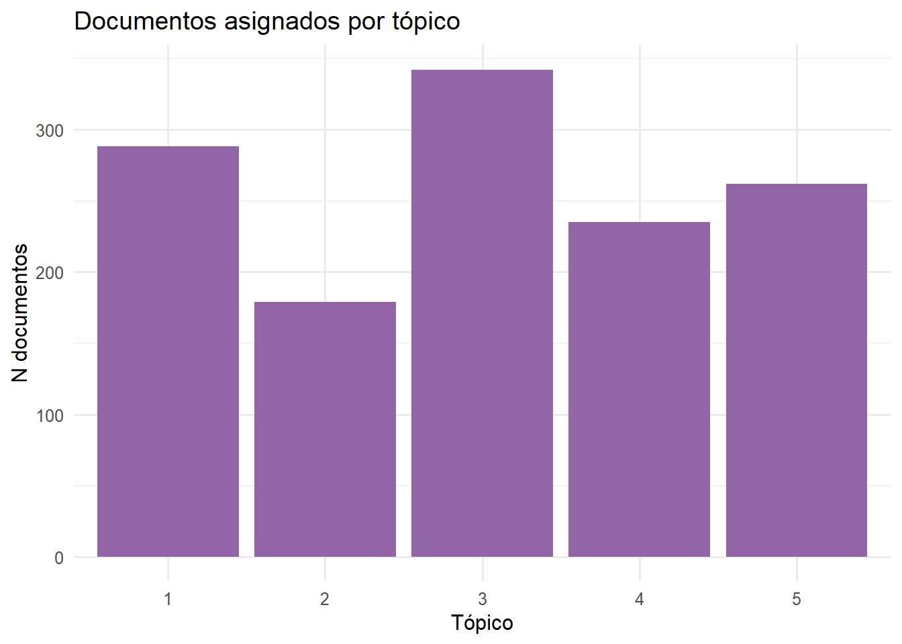

Presentación
El análisis de tópicos nos permite realizar una primera selección y mapeo del corpus de sentencias. En este documento se presentan dos formas para realizar un análisis de tópicos: (I) inductivo mediante el uso LDA, (II) deductivo mediante el uso de KeyATM.
El primer tipo, nos permite estimar la cantidad de tópicos óptima que el corpus ofrece, permitiendonos explorar desde los datos mismos.
El segundo tipo, nos permite estimar la cantidad de documentos que pueden vincularse a los tópicos teóricamente propuestos.
Ambos nos permiten ver la probabilidad de que los documentos se relacionen con cada tópico.
En una primera instancia, este análisis de tópicos nos permite explorar el corpus, pero al mismo tiempo realizar una primera selección de documentos a partir de mayor probabilidad de representar el tópico.
Datos
Se presentan 887 sentencias
- responden a la materia “DIVORCIO POR CULPA”
- emtre los años 2023 y 2024.
Análisis de tópicos
I. INDUCTIVO
A nivel de palabras
Análisis de perplejidad (k óptimo)
El análisis de perplejidad nos indica que el número óptimo de tópicos es 16.
Palabras por tópico
# A tibble: 16 × 2
topic palabras
<int> <chr>
1 1 2022, veintitrés, divorcio, noviembre, direccion002, demandado, octubr…
2 2 presente, tribunal, demanda, 2021, talca, veintitrés, teniendo, esta, …
3 3 identidad, cédula, nacional, casada, chilena, casado, chileno, número,…
4 4 domiciliada, demanda, direccion002, comuna, domiciliado, años, primero…
5 5 compareciente, zoom, inicio, forma, registro, sala, magistrado, audio,…
6 6 parte, demandante, abogado, demandada, audiencia, actuaciones, juicio,…
7 7 familia, juzgado, veintitrés, pjud.cl, mail, alto, fono, puente, econo…
8 8 correo, comparece, demandante, domicilio, electrónico, cedula, juicio,…
9 9 divorcio, compensación, económica, culpa, convivencia, cese, unilatera…
10 10 matrimonio, bajo, circunscripción, contrajo, civil, ante, régimen, ins…
11 11 comuna, domiciliado, domiciliada, demanda, vistos, contra, cónyuge, di…
12 12 comparece, demandante, horas, audio, termino, abogado, demandada, part…
13 13 compareciente, parte, abogado, audiencia, magistrado, encargado, termi…
14 14 demanda, divorcio, miguel, veintitrés, domicilio, contra, casada, inte…
15 15 culpa, divorcio, 2023, domicilio, demandado, marzo, sentencia, judicia…
16 16 santiago, 2023, proc, audiencia, juzgado, demanda, familia, forma, ini…Se indica que agrupe las 20 palabras con mayor probabilidad de ser parte del tópico.


A nivel de FRASES

# A tibble: 54 × 4
# Groups: topic [5]
topic gamma doc_id frase
<int> <dbl> <int> <chr>
1 1 0.397 414 puerto montt, cuatro de septiembre de dos mil veintitrés.…
2 1 0.382 355 visto, oido y considerando:primero: que ante este tribuna…
3 1 0.365 8 arica, trece de diciembre de dos mil veinticuatro.-vistos…
4 1 0.365 306 arica, trece de octubre de dos mil veintitrés.- vistos y …
5 1 0.365 526 arica, treinta y uno de julio de dos mil veintitrés.- vis…
6 1 0.359 361 arica, ventiocho de septiembre de dos mil veintitres.- vi…
7 1 0.356 779 puerto montt, once de mayo de dos mil veintitrés vistos, …
8 1 0.355 103 vistos, oído y considerando: primero: que ante este tribu…
9 1 0.355 104 arica, uno de abril de dos mil veinticuatro.-vistos y oíd…
10 1 0.353 243 nacimiento, de noviembre de 2023visto, oídos y consideran…
# ℹ 44 more rowsTopic 1
print(top_frases_por_topico$frase[1:10]) [1] "puerto montt, cuatro de septiembre de dos mil veintitrés.-vistos, oido y teniendo presente:primero: que ante este tribunal de familia de puerto montt se tramitó la causa ..."
[2] "visto, oido y considerando:primero: que ante este tribunal de familia de san felipe, el día veintisiete de septiembre en curso, se llevó a efecto audiencia de juicio oral de causa ..."
[3] "arica, trece de diciembre de dos mil veinticuatro.-vistos y oídos:primero: que, ante este tribunal de familia de arica, en los autos ."
[4] "arica, trece de octubre de dos mil veintitrés.- vistos y oídos: primero: que, ante este tribunal de familia de arica, en los autos ."
[5] "arica, treinta y uno de julio de dos mil veintitrés.- vistos y oídos: primero: que, ante este tribunal de familia dearica, en los autos ."
[6] "arica, ventiocho de septiembre de dos mil veintitres.- vistos y oídos: primero: que, ante este tribunal de familia de arica, en estos autos ."
[7] "puerto montt, once de mayo de dos mil veintitrés vistos, oidos y teniendo presente primero: que ante este tribunal de familia se siguió esta causa por demanda de divorcio por culpa conjuntamente con compensación económica."
[8] "vistos, oído y considerando: primero: que ante este tribunal de familia de puerto montt se tramitó la causa ..."
[9] "arica, uno de abril de dos mil veinticuatro.-vistos y oídos:primero: que, ante este tribunal de familia de arica, en los autos ."
[10] "nacimiento, de noviembre de 2023visto, oídos y considerando: primero : que los días de marzo, de mayo, de septiembre, de octubre y de octubre de se l levó a efecto el juicio oral en estos antecedentes ." Topic 2
print(top_frases_por_topico$frase[11:20]) [1] "nacimiento, de noviembre de 2023visto, oídos y considerando: primero : que los días de marzo, de mayo, de septiembre, de octubre y de octubre de se l levó a efecto el juicio oral en estos antecedentes ."
[2] "san bernardo, diecisiete de julio de dos mil veintitrés.visto, oído los intervinientes y considerando:primero: que comparece doña zoe, empleada pública, casada, domiciliada en direccion000, comuna de direccion001, interpone demanda de divorcio por culpa en contra de don ian, trabajador independiente, casado, domiciliado en direccion002, direccion001.funda su demanda que mantuvieron una relación durante cuatro meses y se casaron con .al principio del matrimonio todo iba bien, tenían una buena relación dentro del matrimonio, fruto de él nacieron dos hijos teo de años y yan de años; ella además ya tenía una hija de dos años fruto de una relación anterior, que fue criada por..."
[3] "san bernardo, diecisiete de julio de dos mil veintitrés.visto, oído los intervinientes y considerando:primero: que comparece doña zoe, empleada pública, casada, domiciliada en direccion000, comuna de direccion001, interpone demanda de divorcio por culpa en contra de don ian, trabajador independiente, casado, domiciliado en direccion002, direccion001.funda su demanda que mantuvieron una relación durante cuatro meses y se casaron con .al principio del matrimonio todo iba bien, tenían una buena relación dentro del matrimonio, fruto de él nacieron dos hijos teo de años y yan de años; ella además ya tenía una hija de dos años fruto de una relación anterior, que fue criada por..."
[4] "del matrimonio nacieron los hijos yuliana, el num003 de , vicente, nacido el num004 de ,santino, nacido el num005 de y emerson, nacido..."
[5] "del matrimonio nacieron los hijos yuliana, el num003 de , vicente, nacido el num004 de ,santino, nacido el num005 de y emerson, nacido..."
[6] "san bernardo, diecisiete de julio de dos mil veintitrés.visto, oído los intervinientes y considerando:primero: que comparece doña zoe, empleada pública, casada, domiciliada en direccion000, comuna de direccion001, interpone demanda de divorcio por culpa en contra de don ian, trabajador independiente, casado, domiciliado en direccion002, direccion001.funda su demanda que mantuvieron una relación durante cuatro meses y se casaron con .al principio del matrimonio todo iba bien, tenían una buena relación dentro del matrimonio, fruto de él nacieron dos hijos teo de años y yan de años; ella además ya tenía una hija de dos años fruto de una relación anterior, que fue criada por..."
[7] "del matrimonio nacieron los hijos yuliana, el num003 de , vicente, nacido el num004 de ,santino, nacido el num005 de y emerson, nacido..."
[8] "del matrimonio nacieron los hijos yuliana, el num003 de , vicente, nacido el num004 de ,santino, nacido el num005 de y emerson, nacido..."
[9] "divorcio unilateral por cese de convivencia (subsidiaria)..abogado compareciente antonio andrés quispe huanca, run num003.forma notificacion correo electronicoparte demandadacomparecienterebeca, run num004, años, casada,..."
[10] "divorcio unilateral por cese de convivencia (subsidiaria)..abogado compareciente antonio andrés quispe huanca, run num003.forma notificacion correo electronicoparte demandadacomparecienterebeca, run num004, años, casada,..." Topic 3
print(top_frases_por_topico$frase[21:30]) [1] "plantilla acta de audiencia de juicio en causa sobredivorcio unilateral por culpa.-..abogado demandante (comparece)maria beatriz perez mansilla, mbeatriz.perezcajbiobio.cl.parte demandada (comparece presencialmente, pero aplica protocolo especial por medida cautelar vigente)gael, cédula de..."
[2] "plantilla de acta de audienciacontenciosa general..46nº registro de audio num000parte demandante nocomparecientedereckrun num001abogada parte demandantecomparecientemauricio javier díaz bunsterparte demandadacomparecientedayanarun num002abogado parte demandadacomparecienteignacio maldonado fuentesactuaciones efectuadas: si no ord (hecho de haberse efectuado o no) dictacion de sentencia x 1observaciones:se inicia la audiencia con la..."
[3] "plantilla de acta de audienciacontenciosa general..46nº registro de audio num000parte demandante nocomparecientedereckrun num001abogada parte demandantecomparecientemauricio javier díaz bunsterparte demandadacomparecientedayanarun num002abogado parte demandadacomparecienteignacio maldonado fuentesactuaciones efectuadas: si no ord (hecho de haberse efectuado o no) dictacion de sentencia x 1observaciones:se inicia la audiencia con la..."
[4] "plantilla de acta de audienciacontenciosa general..46nº registro de audio num000parte demandante nocomparecientedereckrun num001abogada parte demandantecomparecientemauricio javier díaz bunsterparte demandadacomparecientedayanarun num002abogado parte demandadacomparecienteignacio maldonado fuentesactuaciones efectuadas: si no ord (hecho de haberse efectuado o no) dictacion de sentencia x 1observaciones:se inicia la audiencia con la..."
[5] "plantilla de acta de audienciacontenciosa general..46nº registro de audio num000parte demandante nocomparecientedereckrun num001abogada parte demandantecomparecientemauricio javier díaz bunsterparte demandadacomparecientedayanarun num002abogado parte demandadacomparecienteignacio maldonado fuentesactuaciones efectuadas: si no ord (hecho de haberse efectuado o no) dictacion de sentencia x 1observaciones:se inicia la audiencia con la..."
[6] "plantilla de acta de audienciacontenciosa general..46nº registro de audio num000parte demandante nocomparecientedereckrun num001abogada parte demandantecomparecientemauricio javier díaz bunsterparte demandadacomparecientedayanarun num002abogado parte demandadacomparecienteignacio maldonado fuentesactuaciones efectuadas: si no ord (hecho de haberse efectuado o no) dictacion de sentencia x 1observaciones:se inicia la audiencia con la..."
[7] "acta de audiencia de juicio de divorcio por culpa y compensacioneconomica..nº registro de audio num000parte demandantecomparecedependencias deltribunalyairrut num001domiciliado en direccion000, direccion001.abogadodemandantecomparece vcalejandra noemí avendaño paez, con poder en autos.demandadano comparecelucíarun n num002domicilio reservado.abogado demandadacomparece vccarla torti, con poder en autos.i.- parte..."
[8] "acta de audiencia de juicio de divorcio por culpa y compensacioneconomica..nº registro de audio num000parte demandantecomparecedependencias deltribunalyairrut num001domiciliado en direccion000, direccion001.abogadodemandantecomparece vcalejandra noemí avendaño paez, con poder en autos.demandadano comparecelucíarun n num002domicilio reservado.abogado demandadacomparece vccarla torti, con poder en autos.i.- parte..."
[9] "acta de audiencia de juicio de divorcio por culpa y compensacioneconomica..nº registro de audio num000parte demandantecomparecedependencias deltribunalyairrut num001domiciliado en direccion000, direccion001.abogadodemandantecomparece vcalejandra noemí avendaño paez, con poder en autos.demandadano comparecelucíarun n num002domicilio reservado.abogado demandadacomparece vccarla torti, con poder en autos.i.- parte..."
[10] "acta de audiencia de juicio de divorcio por culpa y compensacioneconomica..nº registro de audio num000parte demandantecomparecedependencias deltribunalyairrut num001domiciliado en direccion000, direccion001.abogadodemandantecomparece vcalejandra noemí avendaño paez, con poder en autos.demandadano comparecelucíarun n num002domicilio reservado.abogado demandadacomparece vccarla torti, con poder en autos.i.- parte..." Topic 4
print(top_frases_por_topico$frase[31:41]) [1] "acta de audiencia de juicio de divorcio por culpa y compensacioneconomica..nº registro de audio num000parte demandantecomparecedependencias deltribunalyairrut num001domiciliado en direccion000, direccion001.abogadodemandantecomparece vcalejandra noemí avendaño paez, con poder en autos.demandadano comparecelucíarun n num002domicilio reservado.abogado demandadacomparece vccarla torti, con poder en autos.i.- parte..."
[2] "que, comparecezoe, cédula nacional de identidad número num000, chilena, casada, labores de hogar, con domicilio en direccion000,direccion001, y deduce demanda de aumento de alimentos menores, en contra de don teo, chileno, casado, empleado, cédula de identidad número num001, con domicilio endireccion002, direccion001, solicitando el aumento de la pensión de alimentos establecida a favor de los hijos en común de las partes valery, cédula de identidad númeronum002, y ian cédula de identidad número num003, por haber variado las circunstancias tenidas a la vista al momento de fijar la..."
[3] "que, comparecezoe, cédula nacional de identidad número num000, chilena, casada, labores de hogar, con domicilio en direccion000,direccion001, y deduce demanda de aumento de alimentos menores, en contra de don teo, chileno, casado, empleado, cédula de identidad número num001, con domicilio endireccion002, direccion001, solicitando el aumento de la pensión de alimentos establecida a favor de los hijos en común de las partes valery, cédula de identidad númeronum002, y ian cédula de identidad número num003, por haber variado las circunstancias tenidas a la vista al momento de fijar la..."
[4] "que, comparecezoe, cédula nacional de identidad número num000, chilena, casada, labores de hogar, con domicilio en direccion000,direccion001, y deduce demanda de aumento de alimentos menores, en contra de don teo, chileno, casado, empleado, cédula de identidad número num001, con domicilio endireccion002, direccion001, solicitando el aumento de la pensión de alimentos establecida a favor de los hijos en común de las partes valery, cédula de identidad númeronum002, y ian cédula de identidad número num003, por haber variado las circunstancias tenidas a la vista al momento de fijar la..."
[5] "visto, oido y teniendo presente:primero: que comparece ante éste tribunal doña isis, casada, labores de hogar, domiciliada en direccion000, comuna de direccion001, quien interpone demanda de alimentos mayores y menores en favor de su hijo, y demanda de bien familiar, en contra de don erwin, trabajador dependiente, casado, domiciliado en direccion002, comuna dedireccion003.en cuanto a la demanda de alimentos, se tienen por reproducidas para todos los efectos legales los argumentos vertidos..."
[6] "visto, oido y teniendo presente:primero: que comparece ante éste tribunal doña isis, casada, labores de hogar, domiciliada en direccion000, comuna de direccion001, quien interpone demanda de alimentos mayores y menores en favor de su hijo, y demanda de bien familiar, en contra de don erwin, trabajador dependiente, casado, domiciliado en direccion002, comuna dedireccion003.en cuanto a la demanda de alimentos, se tienen por reproducidas para todos los efectos legales los argumentos vertidos..."
[7] "visto, oido y teniendo presente:primero: que comparece ante éste tribunal doña isis, casada, labores de hogar, domiciliada en direccion000, comuna de direccion001, quien interpone demanda de alimentos mayores y menores en favor de su hijo, y demanda de bien familiar, en contra de don erwin, trabajador dependiente, casado, domiciliado en direccion002, comuna dedireccion003.en cuanto a la demanda de alimentos, se tienen por reproducidas para todos los efectos legales los argumentos vertidos..."
[8] "visto, oido y teniendo presente:primero: que comparece ante éste tribunal doña isis, casada, labores de hogar, domiciliada en direccion000, comuna de direccion001, quien interpone demanda de alimentos mayores y menores en favor de su hijo, y demanda de bien familiar, en contra de don erwin, trabajador dependiente, casado, domiciliado en direccion002, comuna dedireccion003.en cuanto a la demanda de alimentos, se tienen por reproducidas para todos los efectos legales los argumentos vertidos..."
[9] "visto, oido y teniendo presente:primero: que comparece ante éste tribunal doña isis, casada, labores de hogar, domiciliada en direccion000, comuna de direccion001, quien interpone demanda de alimentos mayores y menores en favor de su hijo, y demanda de bien familiar, en contra de don erwin, trabajador dependiente, casado, domiciliado en direccion002, comuna dedireccion003.en cuanto a la demanda de alimentos, se tienen por reproducidas para todos los efectos legales los argumentos vertidos..."
[10] "visto, oido y teniendo presente:primero: que comparece ante éste tribunal doña isis, casada, labores de hogar, domiciliada en direccion000, comuna de direccion001, quien interpone demanda de alimentos mayores y menores en favor de su hijo, y demanda de bien familiar, en contra de don erwin, trabajador dependiente, casado, domiciliado en direccion002, comuna dedireccion003.en cuanto a la demanda de alimentos, se tienen por reproducidas para todos los efectos legales los argumentos vertidos..."
[11] "visto, oido y teniendo presente:primero: que comparece ante éste tribunal doña isis, casada, labores de hogar, domiciliada en direccion000, comuna de direccion001, quien interpone demanda de alimentos mayores y menores en favor de su hijo, y demanda de bien familiar, en contra de don erwin, trabajador dependiente, casado, domiciliado en direccion002, comuna dedireccion003.en cuanto a la demanda de alimentos, se tienen por reproducidas para todos los efectos legales los argumentos vertidos..." Topic 5
print(top_frases_por_topico$frase[42:51]) [1] "vistos, oídos y teniendo presente:primero: que con ., en contra de su cónyuge doña esperanza, run n num001, desconoce ocupación u oficio, domiciliada en direccion002, direccion003, señalando que mantuvo una relación con la demandada por un año y tres meses aproximadamente, contrayendo finalmente matrimonio el de febrero de , en la circunscripción de penco, el cual se inscribió bajo el número num002, del registro de matrimonios del mismo año, bajo el..."
[2] "funda su acción señalando que contrajo matrimonio con la demandada el día de octubre de , en la circunscripción de la comuna de concepción, bajo el número num002, de dicho año."
[3] "vistos, oídos y teniendo presente:primero: que con ., en contra de su cónyuge doña esperanza, run n num001, desconoce ocupación u oficio, domiciliada en direccion002, direccion003, señalando que mantuvo una relación con la demandada por un año y tres meses aproximadamente, contrayendo finalmente matrimonio el de febrero de , en la circunscripción de penco, el cual se inscribió bajo el número num002, del registro de matrimonios del mismo año, bajo el..."
[4] "cauquenes, a veintinueve de noviembre de dos mil veintitrés.vistos, oídos y considerando:primero: que se presenta doña milena, labores de hogar, domiciliada endireccion000, comuna de direccion001, quien interpone demanda en juicio de divorcio por culpa, en contra de su cónyuge, don tristán, trabajador temporero, domiciliado en direccion002, comuna de direccion003, bajo los siguientes fundamentos.los hechos:el día de agosto del año , contrajo matrimonio con el demandado ante el oficial del servicio de registro civil de la circunscripción cauquenes, el que se inscribió bajo el número num000, en el registro de matrimonios correspondiente a dicho año; bajo régimen patrimonial de separación total..."
[5] "indicó que el de febrero del año , contrajo matrimonio, el cual se inscribió en el registro civil de la circunscripción de maule, bajo número de inscripción..."
[6] "indicó que el de febrero del año , contrajo matrimonio, el cual se inscribió en el registro civil de la circunscripción de maule, bajo número de inscripción..."
[7] ".funda su acción en que contrajo matrimonio con la demandada con .no habiendo pasado mucho tiempo desde la celebración de nuestro matrimonio,..."
[8] "nnum001, chilena, casada, se desconoce profesión u oficio, domiciliad en direccion002,direccion003.indica que el actor contrajo matrimonio con la demandada el día de enero del año , ante el oficial del registro civil de la circunscripción de molina, el cual se encuentra insc."
[9] "fundamenta su demanda en que conoció al demando el de noviembre de , luego de una relación sentimental de años decidieron contraer matrimonio el día de agosto de inscribiéndose bajo el número num002 del registro del mismo año en la circunscripción de san miguel, el régimen pactado fue el de separación de bienes y de dicha unión..."
[10] "1concepción, tres de noviembre de dos mil veintitrés.visto:que, se ha iniciado esta causa, por demanda de divorcio, interpuesta por don iñigo, run num000, casado, diseñador gráfico, domiciliado endireccion000 direccion001; en contra de su cónyuge doña marcela,run num001, casada, contador auditor, domiciliada en direccion002,direccion003.señala que consta en certificado de matrimonio que acompaña, bajo el número de inscripción num002 del año del servicio de registro civil e identificación de la circunscripción concepción, que junto a la demandada de autos ya individualizada, contrajimos dicho vinculo el de noviembre del año ." Topic 6
print(top_frases_por_topico$frase[52:61]) [1] "1concepción, tres de noviembre de dos mil veintitrés.visto:que, se ha iniciado esta causa, por demanda de divorcio, interpuesta por don iñigo, run num000, casado, diseñador gráfico, domiciliado endireccion000 direccion001; en contra de su cónyuge doña marcela,run num001, casada, contador auditor, domiciliada en direccion002,direccion003.señala que consta en certificado de matrimonio que acompaña, bajo el número de inscripción num002 del año del servicio de registro civil e identificación de la circunscripción concepción, que junto a la demandada de autos ya individualizada, contrajimos dicho vinculo el de noviembre del año ."
[2] "el día de febrero de contrajo matrimonio con don didier, bajo régimen de sociedad conyugal, ante el oficial del registro civil e identificación, circunscripción deteodoro schmidt, el que se inscribió bajo el numero..."
[3] ".funda su acción en que contrajo matrimonio con la demandada con .no habiendo pasado mucho tiempo desde la celebración de nuestro matrimonio,..."
[4] NA
[5] NA
[6] NA
[7] NA
[8] NA
[9] NA
[10] NA Topic 7
print(top_frases_por_topico$frase[62:71]) [1] NA NA NA NA NA NA NA NA NA NAA nivel de documento
# La matriz gamma: probabilidad de cada documento a cada tópico
gamma_docs <- tidy(modelo_lda, matrix = "gamma") %>%
rename(doc_id = document) %>%
mutate(doc_id = as.integer(doc_id))
# Unir con el texto original para tener contexto
gamma_completo <- gamma_docs %>%
left_join(docs_df, by = "doc_id")
# Asignar a cada documento su tópico más probable
doc_topico_dominante <- gamma_completo %>%
group_by(doc_id) %>%
slice_max(gamma, n = 1) %>%
ungroup() %>%
arrange(topic, -gamma)
print(doc_topico_dominante)# A tibble: 1,306 × 4
doc_id topic gamma texto
<int> <int> <dbl> <chr>
1 542 1 0.397 "<br/>acta audiencia de juicio contenciosa general<br/>fe…
2 478 1 0.382 "<br/>sentencia<br/>temuco, diecisiete de agosto de dos m…
3 12 1 0.365 "<br/>acta de audiencia de juicio – divorcio por culpa.<b…
4 410 1 0.365 "<br/>segundo juzgado de familia de santiago.<br/>calle g…
5 696 1 0.365 "<br/>tribunal de familia de tomé<br/>maipú n°1080, inter…
6 482 1 0.359 "<br/>sentencia<br/>temuco, diecisiete de agosto de dos m…
7 1028 1 0.356 <NA>
8 138 1 0.355 "<br/>rit : c-6480-2023 fuentes/ávalos f. ing.: 25/07/202…
9 139 1 0.355 "<br/>rit : c-6480-2023 fuentes/ávalos f. ing.: 25/07/202…
10 344 1 0.353 "<br/>juzgado de familia - concepcion<br/>castellón n° 43…
# ℹ 1,296 more rows# Top N documentos con mayor probabilidad para cada tópico
top_docs_por_topico <- gamma_completo %>%
group_by(topic) %>%
slice_max(gamma, n = 10) %>%
ungroup() %>%
select(topic, gamma, doc_id, texto) %>%
arrange(topic, -gamma)
print(top_docs_por_topico)# A tibble: 54 × 4
topic gamma doc_id texto
<int> <dbl> <int> <chr>
1 1 0.397 542 "<br/>acta audiencia de juicio contenciosa general<br/>fe…
2 1 0.382 478 "<br/>sentencia<br/>temuco, diecisiete de agosto de dos m…
3 1 0.365 12 "<br/>acta de audiencia de juicio – divorcio por culpa.<b…
4 1 0.365 410 "<br/>segundo juzgado de familia de santiago.<br/>calle g…
5 1 0.365 696 "<br/>tribunal de familia de tomé<br/>maipú n°1080, inter…
6 1 0.359 482 "<br/>sentencia<br/>temuco, diecisiete de agosto de dos m…
7 1 0.356 1028 <NA>
8 1 0.355 138 "<br/>rit : c-6480-2023 fuentes/ávalos f. ing.: 25/07/202…
9 1 0.355 139 "<br/>rit : c-6480-2023 fuentes/ávalos f. ing.: 25/07/202…
10 1 0.353 344 "<br/>juzgado de familia - concepcion<br/>castellón n° 43…
# ℹ 44 more rows# Cuántos documentos dominan en cada tópico + gamma promedio
resumen_topicos <- doc_topico_dominante %>%
group_by(topic) %>%
summarise(
n_documentos = n(),
gamma_promedio = mean(gamma),
gamma_max = max(gamma),
gamma_min = min(gamma)
) %>%
arrange(-n_documentos)
print(resumen_topicos)# A tibble: 5 × 5
topic n_documentos gamma_promedio gamma_max gamma_min
<int> <int> <dbl> <dbl> <dbl>
1 3 342 0.277 0.494 0.204
2 1 288 0.263 0.397 0.204
3 5 262 0.259 0.368 0.204
4 4 235 0.312 0.551 0.204
5 2 179 0.255 0.377 0.204doc_topico_dominante %>%
count(topic) %>%
ggplot(aes(x = factor(topic), y = n, fill = factor(topic))) +
geom_col(show.legend = FALSE) +
scale_fill_manual(values = rep("#9265A6", k)) +
labs(
title = "Documentos asignados por tópico",
x = "Tópico",
y = "N documentos"
) +
theme_minimal(base_size = 12)
# Seleccionar documentos con alta certeza de pertenencia a su tópico
muestra_reducida <- doc_topico_dominante %>%
filter(gamma > 0.5) %>% # umbral de probabilidad — ajustable
group_by(topic) %>%
slice_max(gamma, n = 20) %>% # top 20 por tópico — ajustable
ungroup() %>%
arrange(topic, -gamma)
cat("Documentos seleccionados:", nrow(muestra_reducida), "de", nrow(docs_df))Documentos seleccionados: 4 de 887II. DEDUCTIVO
Modelo KeyATM (Keyword Assisted Topic Models)
- permite proponer palabras semilla (seed words) por tópico, que se utilizan como anclas semánticas
- bayesiano y con probabilidades interpretables
- en su output nos entrega un objeto data.frame que indica la probabilidad de cada documento al tópico (esto implica disntiguir bien los elementos cuando realizamos el corpus)
Identfiicar los tópicos y sus palabras semilla
En este paso es importante tener claridad de los tópicos que nos gustaría probar que permitan capturar correctamente la “gramática moral” y la relación con los ideales democráticos (igualdad y autonomía personal) en la vida familiar.
# Definir topicos
palabras_clave <- list(
"igualdad_carga_domestica" = c("cuidado", "trabajo", "carga", "casa", "doméstica", "hogar", "responsabilidad"),
"igualdad_parentalidad" = c("crianza", "padre", "madre", "hijo", "hija", "participación"),
"autonomia_personal_restringida" = c("violencia", "violencia física", "violencia psicológica", "infidelidad"),
"derecho_proyecto_propio" = c("carrera", "proyecto", "vida", "desarrollo", "personal")
)Definir el número de palabras por tópico
# Ver palabras por tópico
top_words(modelo_keyatm, n = 15) 1_igualdad_carga_domestica 2_igualdad_parentalidad
1 divorcio divorcio
2 demanda identidad
3 comuna cédula
4 culpa demanda
5 veintitrés culpa
6 mil dos
7 dos mil
8 casa [✓] comuna
9 san n
10 familia nacional
11 domiciliada domiciliada
12 compensación domiciliado
13 juzgado primero
14 cédula veintitrés
15 domiciliado considerando
3_autonomia_personal_restringida 4_derecho_proyecto_propio Other_1
1 matrimonio juzgado parte
2 demanda familia demandante
3 n divorcio abogado
4 año juez compareciente
5 bajo culpa audiencia
6 divorcio virtual inicio
7 veintitrés personal [✓] run
8 dos tribunal ruc
9 comuna sentencia dos
10 identidad ángeles audio
11 mil atención mil
12 cédula copiapó comparece
13 circunscripción teléfonos termino
14 vistos economica registro
15 primero cruz nº
Other_2 Other_3
1 santiago n
2 audiencia divorcio
3 proc alto
4 inicio domicilio
5 ruc juzgado
6 demanda zoom
7 forma fono
8 parte puente
9 divorcio comparece
10 familia culpa
11 juicio familia
12 f horas
13 juzgado identidad
14 ing veintitrés
15 ordinario registroEl data.frame doc_topicos nos permite cuantificar, a un nivel general de los documentos, a cual tributan más cada uno en los tópicos propuestos, indicando su probabilidad. Con ello, podemos ver cuáles tienen mayor afinidad (o mayor probabilidad) con el tópico y seleccionar un primer corpus reducido.
sjmisc::frq(doc_topicos$topico)x <character>
# total N=887 valid N=887 mean=3.93 sd=1.70
Value | N | Raw % | Valid % | Cum. %
-----------------------------------------------------------------
1_igualdad_carga_domestica | 61 | 6.88 | 6.88 | 6.88
2_igualdad_parentalidad | 166 | 18.71 | 18.71 | 25.59
3_autonomia_personal_restringida | 199 | 22.44 | 22.44 | 48.03
4_derecho_proyecto_propio | 10 | 1.13 | 1.13 | 49.15
Other_1 | 308 | 34.72 | 34.72 | 83.88
Other_2 | 86 | 9.70 | 9.70 | 93.57
Other_3 | 57 | 6.43 | 6.43 | 100.00
<NA> | 0 | 0.00 | <NA> | <NA>IMPORTANTE: mejorar las categorias del modelo keyATM